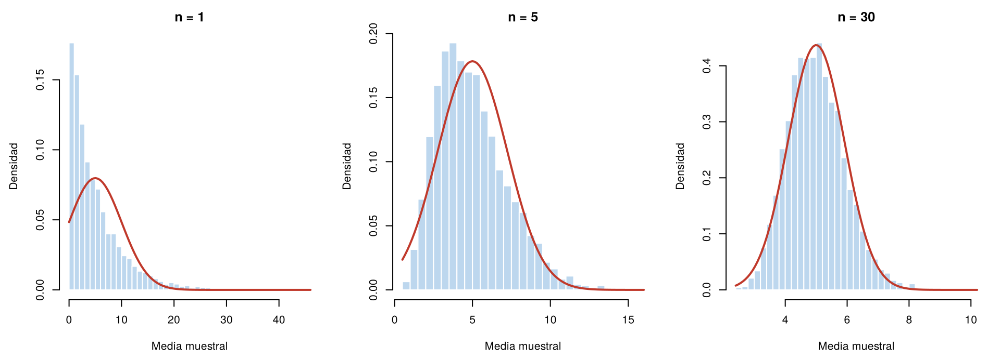

En Distribución muestral se vio que la media de 36 llamadas tiene forma de campana, aunque la duración de cada llamada sigue un modelo exponencial muy asimétrico. Esto no es una casualidad del ejemplo: ocurre con casi cualquier población. Lo explica el teorema del límite central, uno de los resultados más importantes de la estadística.
Gracias a este teorema, la distribución normal sirve para construir intervalos de confianza y pruebas de hipótesis sobre medias y proporciones, aunque los datos no sean normales. Esta página presenta el teorema, muestra con simulación cómo funciona y explica cuándo la aproximación es buena. Los bloques de código se ejecutan en orden.
Si \(X_1, X_2, \ldots, X_n\) son i.i.d. de una población con media \(\mu\) y desviación estándar \(\sigma\) finita, entonces, cuando \(n\) es grande, la media muestral tiene aproximadamente una distribución normal:
\[ \bar{X} \;\approx\; N\left(\mu,\ \frac{\sigma^2}{n}\right) \]
En forma precisa, el teorema dice que la media estandarizada
\[ Z = \frac{\bar{X} - \mu}{\sigma / \sqrt{n}} \]
se acerca cada vez más a una normal estándar, \(N(0, 1)\), a medida que \(n\) crece. La primera expresión es la forma práctica de usarlo con un \(n\) dado.
Lo notable es que no importa la forma de la población: puede ser asimétrica, discreta o con varios picos. Solo se necesita que las observaciones sean independientes, que vengan de la misma población y que la varianza sea finita.
Abraham de Moivre mostró en 1733 que el número de caras en muchos lanzamientos de una moneda se aproxima a una curva normal. Pierre-Simon Laplace extendió el resultado en 1810 a sumas de otras variables. El nombre de “teorema central del límite” se lo dio George Pólya en 1920, por su papel central en la probabilidad.
Se toman 5 000 muestras de la población exponencial de las llamadas (media 5 y desviación estándar 5), con tamaños \(n = 1\), \(n = 5\) y \(n = 30\), y se grafica la distribución de las medias. La curva roja es la normal que predice el teorema, \(N(5, 5^2/n)\).
set.seed(2026)
par(mfrow = c(1, 3), mar = c(4.5, 4.5, 2.5, 1))
for (n in c(1, 5, 30)) {
medias <- replicate(5000, mean(rexp(n, rate = 1/5)))
hist(medias, breaks = 40, freq = FALSE, col = "#BDD7EE", border = "white",
main = paste("n =", n), xlab = "Media muestral", ylab = "Densidad")
curve(dnorm(x, mean = 5, sd = 5 / sqrt(n)), add = TRUE, col = "#C0392B", lwd = 2)
}
Distribución de 5 000 medias muestrales de una población exponencial con media 5, para tres tamaños de muestra. La curva roja es la normal que predice el teorema.
En los tres casos, el centro está en 5 y la dispersión es cercana a \(5/\sqrt{n}\), como se vio en la página anterior. Lo que cambia con \(n\) es la forma.
En el gráfico interactivo puede elegir la población y el tamaño de muestra \(n\). Cada vez que cambia una opción o presiona el botón, se toman 2 000 muestras nuevas. Compruebe que:
No hay un número que sirva para todos los casos. Depende de la población:
| Población | Tamaño con el que la aproximación suele ser buena |
|---|---|
| Normal | Cualquier \(n\): la media es exactamente normal |
| Simétrica, sin valores extremos | Muestras pequeñas, desde 5 o 10 |
| Moderadamente asimétrica | Alrededor de 30 |
| Muy asimétrica o con valores extremos | Más de 30; a veces más de 100 |
La regla de “\(n \geq 30\)” que aparece en muchos textos es una guía práctica para poblaciones moderadamente asimétricas, no una ley. Antes de usar el teorema conviene graficar los datos: si son muy asimétricos o tienen valores extremos, se necesita una muestra más grande.
¿Qué tan probable es que la media de 36 llamadas supere 6 minutos? Por el teorema, \(\bar{X} \approx N(5, (5/6)^2)\):
\[ P(\bar{X} > 6) \approx P\left(Z > \frac{6 - 5}{5/6}\right) = P(Z > 1.2) = 0.115 \]
1 - pnorm(6, mean = 5, sd = 5 / sqrt(36)) # aproximación normal[1] 0.1150697En este caso se conoce el valor exacto, porque la suma de exponenciales sigue un modelo gamma: da 0.118. La aproximación normal es buena, aunque la población sea muy asimétrica.
1 - pgamma(36 * 6, shape = 36, rate = 1/5) # valor exacto[1] 0.118419El mismo teorema se aplica a otros estadísticos que son sumas o promedios. Para muestras grandes e independientes:
| Estadístico | Distribución aproximada |
|---|---|
| Media muestral, \(\bar{X}\) | \(N\left(\mu,\ \dfrac{\sigma^2}{n}\right)\) |
| Suma, \(\sum X_i\) | \(N\left(n\mu,\ n\sigma^2\right)\) |
| Proporción muestral, \(\hat{p}\) | \(N\left(p,\ \dfrac{p(1 - p)}{n}\right)\) |
| Diferencia de medias de dos muestras independientes, \(\bar{X}_1 - \bar{X}_2\) | \(N\left(\mu_1 - \mu_2,\ \dfrac{\sigma_1^2}{n_1} + \dfrac{\sigma_2^2}{n_2}\right)\) |
| Diferencia de proporciones, \(\hat{p}_1 - \hat{p}_2\) | \(N\left(p_1 - p_2,\ \dfrac{p_1(1 - p_1)}{n_1} + \dfrac{p_2(1 - p_2)}{n_2}\right)\) |
La proporción muestral es un caso particular de la media: es el promedio de datos que valen 1 (éxito) o 0 (fracaso). Para la proporción, la aproximación suele ser buena si se esperan al menos 10 éxitos y 10 fracasos, es decir, si \(np \geq 10\) y \(n(1 - p) \geq 10\).
Estas fórmulas suponen una población muy grande o un muestreo con reemplazo. Si la muestra es una parte importante de una población finita y se toma sin reemplazo, la varianza es menor y se corrige con un factor que se verá en la unidad de intervalos de confianza.
El 25 % de los clientes de una tienda en línea compra en su primera visita. En una muestra de 200 visitantes nuevos, ¿qué tan probable es que la proporción que compra sea de 30 % o menos?
Como \(np = 50\) y \(n(1 - p) = 150\), la aproximación normal es adecuada. El error estándar es \(\sqrt{0.25 \times 0.75 / 200} = 0.031\):
ee <- sqrt(0.25 * 0.75 / 200)
ee[1] 0.03061862pnorm(0.30, mean = 0.25, sd = ee) # aproximación normal[1] 0.9487648pbinom(60, size = 200, prob = 0.25) # valor exacto con la binomial: 60 compras = 30 %[1] 0.9546114La aproximación da 0.949 y el valor exacto, 0.955. La diferencia se debe a que la binomial es discreta; se puede reducir con la corrección por continuidad del Reto 3.
| Problema | Causa | Solución |
|---|---|---|
| Creer que el teorema hace normales a los datos | El teorema habla de la media, no de cada observación | Con muestras grandes, los datos siguen teniendo la forma de la población |
| Aplicar “\(n \geq 30\)” como una ley | Es solo una guía práctica | Revisar la asimetría de los datos; con poblaciones muy asimétricas se necesita más |
| Usar \(\sigma\) en lugar de \(\sigma/\sqrt{n}\) | Se confunde la dispersión de los datos con la de la media | La desviación estándar de \(\bar{X}\) es \(\sigma/\sqrt{n}\) |
| Aplicar el teorema con observaciones dependientes | No se revisó la independencia | Por ejemplo, datos medidos en el tiempo pueden estar correlacionados |
| Concluir que los datos “son normales” porque una prueba no rechazó la normalidad | No rechazar no confirma | Una prueba que no rechaza solo indica que no hay evidencia en contra |
Un técnico atiende 40 llamadas en un turno. Cada llamada dura en promedio 5 minutos, con desviación estándar de 5 minutos, de forma independiente. ¿Qué tan probable es que el tiempo total de las 40 llamadas supere 4 horas?
La suma tiene media \(40 \times 5 = 200\) minutos y desviación estándar \(\sqrt{40} \times 5 = 31.6\) minutos. Cuatro horas son 240 minutos:
1 - pnorm(240, mean = 200, sd = sqrt(40) * 5)[1] 0.1029516La probabilidad es 0.103.
La duración media de las llamadas es de 5 minutos en el turno de la mañana y de 6 minutos en el de la tarde, con desviación estándar de 5 y 6 minutos. Se toman 50 llamadas de cada turno. ¿Qué tan probable es que la media de la mañana resulte mayor que la de la tarde?
\(\bar{X}_M - \bar{X}_T \approx N\left(5 - 6,\ \frac{25}{50} + \frac{36}{50}\right) = N(-1,\ 1.22)\).
1 - pnorm(0, mean = -1, sd = sqrt(25/50 + 36/50))[1] 0.182638Aunque las llamadas de la tarde son en promedio más largas, en el 18.2 % de los casos la muestra de la mañana tendría una media mayor.
Se lanza una moneda 100 veces. Calcule la probabilidad de obtener al menos 55 caras con la binomial y con la aproximación normal, primero usando 55 y luego 54.5 como límite. ¿Cuál aproximación se acerca más al valor exacto?
El número de caras tiene media 50 y desviación estándar 5.
1 - pbinom(54, size = 100, prob = 0.5) # exacto[1] 0.18410081 - pnorm(55, mean = 50, sd = 5) # aproximación sin corrección[1] 0.15865531 - pnorm(54.5, mean = 50, sd = 5) # aproximación con corrección[1] 0.1840601El valor exacto es 0.184. Sin corrección la aproximación da 0.159; con 54.5 da 0.184. La corrección por continuidad resta o suma media unidad porque la normal es continua y la binomial solo toma valores enteros.
Simule 5 000 medias de muestras de tamaño 10 de una población uniforme entre 0 y 10, y 5 000 de una exponencial con media 5. En cada caso calcule qué proporción de las medias queda por debajo de \(\mu - 1.96\,\sigma/\sqrt{n}\) y qué proporción queda por encima de \(\mu + 1.96\,\sigma/\sqrt{n}\). Si la aproximación normal fuera perfecta, las dos serían 0.025.
set.seed(2026)
med_unif <- replicate(5000, mean(runif(10, 0, 10)))
med_exp <- replicate(5000, mean(rexp(10, rate = 1/5)))
ee_unif <- (10 / sqrt(12)) / sqrt(10)
ee_exp <- 5 / sqrt(10)
c(abajo = mean(med_unif < 5 - 1.96 * ee_unif), arriba = mean(med_unif > 5 + 1.96 * ee_unif)) # uniforme abajo arriba
0.0244 0.0250 c(abajo = mean(med_exp < 5 - 1.96 * ee_exp), arriba = mean(med_exp > 5 + 1.96 * ee_exp)) # exponencial abajo arriba
0.0064 0.0394 Con la uniforme, las dos colas quedan muy cerca de 0.025. Con la exponencial, la cola de abajo tiene menos de 0.01 y la de arriba, cerca de 0.04: con \(n = 10\), las medias todavía conservan la asimetría de la población. La aproximación normal funciona bien para la uniforme, pero para la exponencial hace falta una muestra más grande.
Última revisión: 7 de noviembre de 2026.